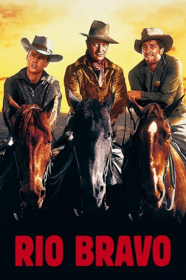
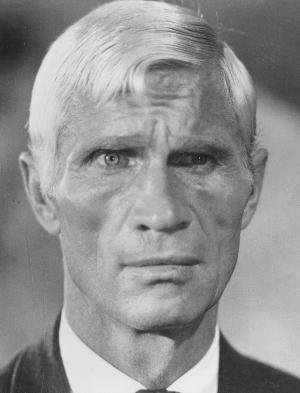
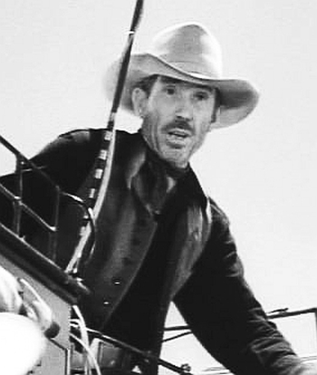

#1478 Rio Bravo
Auszeichnungen: 1 GoldenGlobes gewonnen
 
 IMDB-Wertung: 8.0 / 10
IMDB-Wertung: 8.0 / 10  Metascore: 0
Metascore: 0 
John T. Chance ist Sheriff in der Stadt Rio Bravo. Als er den Mörder Burdette einsperrt, geraten er und sein Gehilfe Stumpy in große Bedrängnis, da der Bruder des Täters das Gefängnis stürmen lassen will. Der stadtbekannte Säufer Dude, der vor einer unglücklichen Frauengeschichte sein Stellvertreter war, und der junge Revolverheld Colorado schließen sich Chance an. Burdettes Männer nehmen Dude als Geisel, um den Mörder freizupressen. Am Rande der Stadt kommt es zum Showdown. Chance und seine Männer können die Schießerei mit Hilfe von ein paar Stangen Dynamit für sich entscheiden.
Jahr: 1959
Dauer: 141 Minuten
FSK: 12
Land: USA Studio: Warner Bros.Tonspuren: DD1.0 - ,
Untertitel:
Auflösung: 1080p (1920x1080) Größe: 10752 MB
Genre: Drama, Komödie, Western
Regisseur: Howard Hawks
Drehbuch: Jules Furthman, Leigh Brackett, B.H. McCampbell
Soundtrack: Dimitri Tiomkin
Darsteller:
 John Wayne als Sheriff John T. Chance
John Wayne als Sheriff John T. Chance Dean Martin als Dude, 'Borachón'
Dean Martin als Dude, 'Borachón'- Ricky Nelson als Colorado Ryan
 Angie Dickinson als Feathers
Angie Dickinson als Feathers Walter Brennan als Stumpy
Walter Brennan als Stumpy Ward Bond als Pat Wheeler
Ward Bond als Pat Wheeler John Russell als Nathan Burdette
John Russell als Nathan Burdette Pedro Gonzalez Gonzalez als Carlos Robante
Pedro Gonzalez Gonzalez als Carlos Robante- Estelita Rodriguez als Consuela Robante
 Claude Akins als Joe Burdette
Claude Akins als Joe Burdette Malcolm Atterbury als Jake, Stage Driver , scenes deleted
Malcolm Atterbury als Jake, Stage Driver , scenes deleted Harry Carey Jr. als Harold , scenes deleted
Harry Carey Jr. als Harold , scenes deleted Yakima Canutt als Gunman on Horse , uncredited
Yakima Canutt als Gunman on Horse , uncredited Robert Donner als (uncredited
Robert Donner als (uncredited Joe Gray als Card Player , uncredited
Joe Gray als Card Player , uncredited-  Gordon Mitchell als Bar Cowboy Watching Fistfight , uncredited
 Bing Russell als Cowboy Murdered in Saloon , uncredited
Bing Russell als Cowboy Murdered in Saloon , uncredited Bob Steele als Matt Harris , uncredited
Bob Steele als Matt Harris , uncredited Sheb Wooley als Cowboy , scenes deleted
Sheb Wooley als Cowboy , scenes deleted Walter Barnes als Charlie , uncredited
Walter Barnes als Charlie , uncredited- George Bell als Barfly , uncredited
- Nesdon Booth als (uncredited
 George Bruggeman als Clem , uncredited
George Bruggeman als Clem , uncredited Ralph Bucko als Barber , uncredited
Ralph Bucko als Barber , uncredited- Albert Cavens als Henchman , uncredited
 Noble 'Kid' Chissell als Barfly , uncredited
Noble 'Kid' Chissell als Barfly , uncredited- Cecil Combs als Barfly , uncredited
- Jose Cuchillo als Pedro , uncredited
 Fred Graham als 2nd Burdette Man in Shootout , uncredited
Fred Graham als 2nd Burdette Man in Shootout , uncredited Myron Healey als Barfly , uncredited
Myron Healey als Barfly , uncredited- Riley Hill als Messenger , uncredited
- Eugene Iglesias als 1st Burdette Man in Shootout , uncredited
- Arthur Kendall als Henchman , uncredited
- Richard LaMarr als Minor Role , uncredited
- Bill Lovett als Barfly , uncredited
-  Cactus Mack als Barfly , uncredited
 Mathew McCue als Barfly , uncredited
Mathew McCue als Barfly , uncredited Frank Mills als Barfly , uncredited
Frank Mills als Barfly , uncredited Kansas Moehring als Barfly , uncredited
Kansas Moehring als Barfly , uncredited- Tom Monroe als Henchman , uncredited
 Jack Perry als Barfly , uncredited
Jack Perry als Barfly , uncredited- Bob Reeves als Bartender , uncredited
 Chuck Roberson als Gunman , uncredited
Chuck Roberson als Gunman , uncredited- Danny Sands als Barfly , uncredited
- Joseph Shimada als Burt , uncredited
 Dean Smith als Card-Playing Burdette Henchman , uncredited
Dean Smith als Card-Playing Burdette Henchman , uncredited- Milan Smith als Barfly , uncredited
- Sailor Vincent als Barfly , uncredited
 Ted White als (uncredited
Ted White als (uncredited- Bob Whitney als Barfly , uncredited
Datei: X:\HD-Western-Collections\John Wayne\Rio Bravo (1959, FSK12, 1920x1080).mkv seit 09.07.2015
Festplatte: HD Eastern+Western
 Es gibt insgesamt 34 Filme in der Gruppe 'HD-Western-Collections\John Wayne'
Es gibt insgesamt 34 Filme in der Gruppe 'HD-Western-Collections\John Wayne'